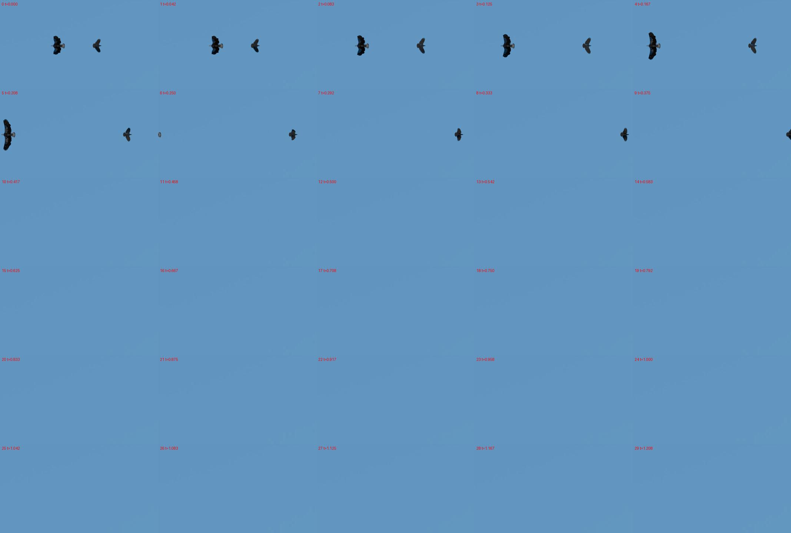
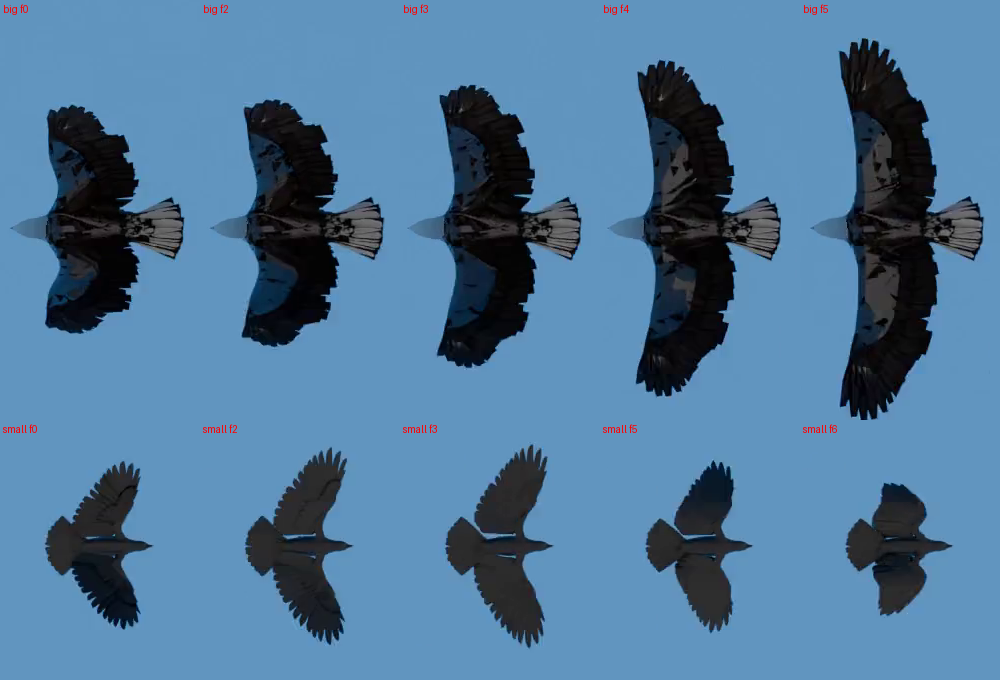

← 视频与问题 · 评估员逐视频报告（由 outputs/eval/*.md 生成）
主因层：真值存疑（小鸟 prior 与小鸟 width 和画面尺度不自洽）+ 2D 尺寸语义（翼展取中位数）+ 2D 外推（出画距离、首帧重复） 根因：两只鸟在同一像面尺度、俯视/仰视平飞（翼展沿图像竖直、体长沿飞行方向水平）。两个速度、0.5 s 距离、大鸟 length（体长）、大鸟 width（翼展）这 5 个真值都能用同一个尺度、按常规语义（length=体长、width=翼展）解释；只有小鸟的两个尺寸（prior 0.94、width 1.30）比画面里的小鸟大 1.4–1.7 倍。所以不是"length/width 整体对调"，而是小鸟的尺寸数字有问题（真值存疑）。harness 自身的缺陷：翼展取各帧中位数而不是展开最大值；首帧重复把平均速度压低 8–14%；出画后的距离返回"最近共同可见帧"的值，而不是做外推。
评估输入：outputs/val_mh3_valcur3_routed.csv、outputs/val_s2d_v6_v9d_routed.csv（两者对本视频完全相同）；2D 场景 outputs/scene2d_eval/s2d_v6_v9/simulation_0089.json（s2d_v5/v6 只有距离 px 不同：724 vs 649，其余一致）；跟踪 tracks / tracks_qwen / tracks_v9 框一致。 叠加图与截图（scratchpad）：
simulation_0089/sheet.jpg
（30 帧总览）simulation_0089/crops.png
（1920 原分辨率下两只鸟的逐帧姿态）- /tmp/claude-1017/-data-yumenghe-QuantiPhy/823507c7-069c-4584-aec0-69d0a1b126a7/scratchpad/eval_0089/run/simulation_0089_overlay_{0.125,0.208,0.333,0.5}s.jpg


画面事实（逐帧）
- 视频 30 帧，24 fps，共 1.25 s。第 0 帧和第 1 帧完全相同（帧差 0.04，而 1→2 是 3.3）。验证集里只有本视频和 simulation_0098_segmented 这样。
- 视角是正对鸟腹（或鸟背），两鸟都水平飞：大鸟（白头白尾的鹰）向左，小鸟（深色、像乌鸦）向右；翼展沿图像竖直，体长（喙到尾）沿图像水平。两鸟中心 y 都在 246±2 px，没有竖直方向运动。
- 大鸟（val 854 px）：帧间位移恒为 67.2 px（f1→f5 分别是 67.2/67.2/67.6/67.1），即 1613 px/s；水平宽（体长加尾扇）77 px 不变；竖直宽（翼展）f0–f5 依次为 101/102/110/125/149/171 px，翅膀一路在展开，第 6 帧出画时还没展到最大。面积变化完全来自翼展，px 速度恒定，说明它没有朝相机靠近。f6（0.25 s）出左边界。
- 小鸟：帧间位移 41.0–41.2 px，即 986 px/s；体长 46–48 px 不变；翼展随扇翅在 59–91 px 之间变（f3 最大 91 px，f6 收翅时 59 px）。f9 出右边界（hires 只剩 60 px 宽），f10（0.417 s）起完全不在画面里。
- 两鸟的 px 速度都恒定（匀速直线），没有加速度。
真值语义：能同时解释 6 个真值的一套说法
只用画面量做比较（val px）：
- 两个速度：17.98/11.0 = 1.635，px 速度比 1613/986 = 1.636，两者一致。由速度反推的尺度，小鸟 0.01116 m/px、大鸟 0.01115 m/px，完全相同，说明两鸟在同一深度（或同一像面尺度）。"两鸟不同深度"不成立：如果小鸟更远，它的真实速度应该更大，与 11.0 矛盾。
- 0.5 s 距离：按匀速外推到第 12 帧，水平间距约 1405 px（hires 3145 px）。14.56/1405 = 0.0104 m/px，与速度尺度相差 7%（差多少取决于 0.5 s 对应第 12 帧还是第 11–12 帧之间）。
- 大鸟 length 0.72 ↔ 0.72/0.0111 = 65 px：画面上体长是 77 px（含喙和尾扇），差 16%。大鸟 width 2.04 ↔ 183 px：出画前翼展已到 171 px 并且还在张开，吻合。所以大鸟就是常规语义：length=体长，width=翼展（完全展开），与测试集里"length of the eagle"和"wingspan"分开问、"width (wing span) of the butterfly"、"width of the plane"等说法一致。
- 小鸟：prior 0.94 ↔ 84 px，width 1.30 ↔ 116 px；画面上小鸟体长只有 47 px、翼展最大 91 px。两个尺寸都比画面大 1.3–1.8 倍，而且 0.94/1.30 的比例（0.72）也对不上 47/91（0.52）。
- 结论：6 个真值里，5 个（2 个速度、距离、大鸟 L、大鸟 W）在"同一尺度 + length=体长 / width=最大翼展"下自洽；小鸟的 prior 和小鸟 width 与它自己的速度矛盾（按它的速度，小鸟应该是体长约 0.53、翼展约 1.0）。最可能的原因是小鸟模型的标称包围盒（静止姿态）和渲染时的缩放不一致。另有一个巧合：prior 0.94 正好约等于小鸟的最大翼展（91 px × 0.0111 = 1.01）。所以几何流水线"length = 框长边"的做法用 0.94 定标后，两个速度刚好对上（11.3 / 17.2）。但这不是数据集的语义：同一套解释放到大鸟身上，length 会是 1.49（真值 0.72）。
- 标为真值存疑的是小鸟 width 1.30，以及 prior 本身的尺度。不建议为了迎合它把 length 改成"最长边"。
题目表
| 题 | 答案 | 几何 | 场景值 s2d (conf) | Qwen | 最终 | MRA | 主因层 |
|---|---|---|---|---|---|---|---|
| 大鸟 length | 0.72 | 1.49 | 1.53 (0.90) | 1.53 | 1.53 (s2d 直采) | 0.0 | 尺度（prior 0.94 按体长 46 px 定标 → 0.0204 m/px，是真值 0.0111 的 1.8 倍）→ 真值存疑 |
| 大鸟 width | 2.04 | 0.97 | 2.38 (0.90) | 2.38 | 2.38 | 0.8 | 恰好对：错尺度 × 翼展中位数 117 px；按 max 翼展 171 px 会是 3.5 |
| 小鸟 width | 1.30 | 0.60 | 1.51 (0.90) | 0.60 | 1.51 | 0.8 | 真值存疑；s2d 用的是翼展中位数 74 px |
| 小鸟平均速度 | 11.0 | 11.30 | 18.5 (0.81) | 11.3 | 11.3 (vlm，照抄几何提示) | 1.0 | 几何"length=长边"恰好对上 prior 的数 |
| 大鸟平均速度 | 17.98 | 17.23 | 28.3 (0.81) | 17.23 | 17.23 | 1.0 | 同上 |
| 0.5 s 两鸟水平距离 | 14.56 | 3.0 | 13.26 (0.051) | 1.88 | 1.88 | 0.1 | 2D 外推（没外推，取了 0.21 s 的值）+ 路由（conf 低时落到 Qwen 的胡猜） |
按画面估值（val px，两种 prior 解读都列出来，不用答案）：
- A：prior = 小鸟体长（数据集语义，现在 s2d 的做法），0.94/46 = 0.0204 m/px：大鸟 L 1.57、大鸟 W（最大翼展）3.5、小鸟 W（最大）1.86、速度 20.1 / 33.0、0.5 s 距离 28.7。
- B：prior = 小鸟最大翼展，0.94/91 = 0.0103 m/px：0.79 / 1.77 / 0.49 / 10.2 / 16.7 / 14.5。
- 语义正确的 A 在本视频上反而全错，原因是 prior 本身对不上画面，这不是 harness 能修的。
根因结论
- 真值存疑（主因，不修）：小鸟的 prior 0.94 和 width 1.30 与小鸟自己的速度 11.0（以及大鸟的全部真值）不在同一尺度上，相差 1.3–1.8 倍。证据见上节：两鸟 px 速度恒定，速度反推的尺度相同（0.01116 / 0.01115 m/px）。in_progress.md 第 44 行写的是"两鸟不同深度，3D 标成 2D"，应改为"同一尺度；小鸟尺寸真值（含 prior）与画面不自洽；大鸟 L/W 是常规语义"。
- 2D 尺寸语义（qp-code-2d，未在修）：
Layer.extent对 along/across 取逐帧中位数（scene2d.py:586）。对扇翅的鸟、蝴蝶来说，翼展应取展开最大值（测试集题面写明 "when fully spread"），体长取中位数。本视频大鸟翼展中位数 117 px，最大 ≥171 px，差 46%。 - 2D 时间/外推（qp-code-2d，部分在修：现在限制外推 0.5 s 内、conf 0.06）：(a) 首帧重复使平均速度偏低（大鸟 1383 vs 1613 px/s，-14%；小鸟 906 vs 986，-8%），const_acc 模型还因此拟合出假的加速度 -6957 px/s²；(b) 出画后的距离返回"最近共同可见帧"0.21 s 的 649 px，而不是匀速外推到 0.5 s 的约 1405 px，算的是另一个量。
逐条问题（按影响面排序）
1. 翼展 / width 取中位数，而不是完全展开的最大值
- 现象：simulation_0089 大鸟 across 各帧 101→171 px，s2d 取中位数 116.6；小鸟 59–91，取中位数 74（json
layers[].extent_px.across）。 - 根因层：2D 尺寸测量（scene2d
Layer.extent的 median 聚合）。3D 侧 scene_fit 已有--fixes wingspan，需核对它对扇翅是否取最大值。 - 同类：测试集上问鸟/鱼/飞机的题共 258 道（鸟 92、鱼 83、飞机 83），其中问 wingspan 的 23 道（simulation_0011/0012/0023/0025/0028/0031/0034/0035/0039 等，几乎都是 3D），问 width 的 15 道（飞机 9、鱼 4、鸟 2、蝴蝶 1 道"width (wing span)"），问 length 的 80 道。飞机的翼展不变，影响小；扇翅的鸟和蝴蝶影响大。
- 通用建议：物体清单 / 解析给出"有可变形翼"（鸟、蝴蝶、蝙蝠）的标记（由 objects 的 shape_hint 或类别判断，不按 video_id）。对这类物体，width/wingspan 取 across 的高分位（如 90–95 分位或最大值，要排除贴边截断的帧），length（体长）取 along 的中位数；用 prior 定标时同理（prior 是翼展就用 max across，是体长就用 median along）。验收：本视频大鸟 across 取到 ≥170 px；其他验证集视频的 S2 尺寸题不变差。
- 负责人：qp-code-2d（3D 的 wingspan fix 请 qp-code-3d 自查是否用最大值）。
2. 出画后的距离题：返回"最近共同可见帧"的值，而不是外推
- 现象：0.5 s 距离 s2d=13.26（649 px @0.21 s，conf 0.051），被路由丢弃，最终取 Qwen 的 1.88（MRA 0.1）。两鸟在画面内是严格匀速直线（帧间位移波动 <0.5 px），匀速外推到 0.5 s 是约 1405 px，s2d 现在的数在原理上就不对（只是被错误尺度凑近了真值）。
- 根因层：scene2d 距离分支（scene2d.py 约 1893–1905 行：tol = min(0.5, 0.5×可见时长)，大鸟只可见 0.21 s，所以容差只有 0.10 s，然后退回到最近共同帧）。外推还依赖分段模型，本视频选了 const_acc，被重复首帧带出 a = -6957 px/s²；用它外推到 0.5 s，大鸟会在 x ≈ -876 而不是 -429，同样错。
- 同类：所有"在 t 时刻物体 A 到 B 的距离/位置"而 t 落在出画之后的题（测试集鸟/飞机/鱼的距离和位移题 42 道，其中一部分属于这种情况）。
- 通用建议：(a) 外推只用匀速模型（或在匀加速的加速度项不显著时退回匀速：比如 |a|·T²/2 小于残差的 2 倍，或加速度显著性检验不过），容差按"外推时长 / 可见时长"和拟合残差来定，而不是固定 0.5×可见时长；(b) 不能外推时就返回空（交给 Qwen / 常识），不要用最近帧的值代替（数值落在另一个时刻，conf 再低也会误导提示）；(c) conf 随外推比例平滑下降。验收：本视频两鸟 0.5 s 的位置差在 1350–1450 px，且不读真值；验证集其他 out_of_view 题不变差。
- 负责人：qp-code-2d。
3. 仿真视频首帧重复，让平均速度偏低、拟合出假加速度
- 现象：本视频 f0 和 f1 完全相同；s2d 平均速度大鸟 1383 px/s（真实匀速 1613）、小鸟 906（986），分段模型都是 const_acc，大鸟 a = -6957 px/s²、小鸟 +1313。验证集同样首帧重复的还有 simulation_0098_segmented（帧差 0.20 vs 2.07）。
- 根因层：跟踪 / 时间轴（perceive 或 scene2d 读帧时）。
- 同类：验证集 2/24 个视频；测试集的仿真视频大概率有同样的渲染习惯（未检查测试集，规则不允许跑；可以在 data 层用帧差检测）。
- 通用建议：在 data 读帧时检测"第 0 帧与第 1 帧像素差 < 后续中位帧差的 5%"，标成重复首帧，运动拟合和平均速度从第 1 帧起算（或把第 0 帧剔除），同时写入场景 json 的 notes。3D 侧的运动拟合也受影响。验收：本视频 s2d 两鸟的分段模型变成 const_vel，大鸟 px 速度在 1600–1620；其他视频的结果不变。
- 负责人：qp-tools（data / perceive 的时间轴），scene2d 和 scene_fit 读这个标记。
4. per-frame 场景图说小鸟在 0.417 / 0.5 s 有框，实际已出画
- 现象：
scene_graph.per_frame["the small bird"]在 t=0.417 和 0.5 时 box=true、label=airborne，但小鸟第 10 帧（0.417 s）起已不在画面里，tracks_v9 也只有 0–8 帧有框。 - 根因层：场景图逐帧采样（大概是取了最近的有框帧）。影响小，但自检"每帧可见物体数"会因此失真。
- 通用建议：per_frame 的 box 只在该帧（±0.5 帧）确实有跟踪框时才为 true。负责人：qp-tools。
5. 叠加图在出画时刻仍画出物体
- 现象：overlay_0.5s.jpg 里两只鸟的凸包被钉在最后可见的位置（大鸟在左边界、小鸟在右边界），但它们此时已不在画面里。评审（critic）看图会被误导。
- 通用建议：render_overlay 在 t 超出 visible 区间时，画虚线外推位置（或不画），并标注 "out of view"。负责人：qp-code-2d。
关于路由（不单列为问题）
- 两个速度：s2d conf 0.81 < 0.85，走 Qwen，Qwen 照抄几何提示 11.3 / 17.23（几何用框长边定标，恰好对上），结果 1.0 是巧合。
- 0.5 s 距离：几何 3.0 像是回退常数，Qwen 1.88 不可信。修好问题 2 之后，外推值 conf 中等时应作为 Qwen 的提示或直接采用。
不建议
- 不要为了本视频把鸟的 length 改成"最长边"或者对调 length/width：测试集题面（"body length" 与 "wingspan" 分开问，"width (wing span)"）说明数据集的语义就是 length=体长、width=翼展；本视频是小鸟尺寸真值异常。